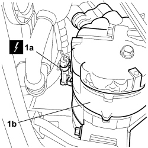
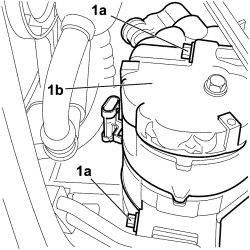

5040A24 AIR CONDITIONING COMPRESSOR - PARTIALLY R.R. FROM THE ENGINE WITHOUT DISCONNECTING THE PIPES
- Path
- Procedures > 50 AUXILIARY UNITS > 5040 AIR CONDITIONING CASING AND COMPONENTS > 5040A AIR CONDITIONING REFRIGERANT CIRCUIT > 5040A24 AIR CONDITIONING COMPRESSOR - PARTIALLY R.R. FROM THE ENGINE WITHOUT DISCONNECTING THE PIPES
- Kind
- repair procedure (removal / refitting; the operation number is the code)
- Applies to
- engines: 2.2; all production periods
- Interactive page
- https://sloeber94.github.io/elrnDB-fCrm/en/#/194000602
Applies to: engines: 2.2; all production periods
 Removing
Removing
 Refitting
Refitting- Turn the ignition key to the OFF position.
- Disconnect the negative battery terminal.
Description | Connector | |
|---|---|---|
BATTERY |
Op. 4450B04 RIGHT FRONT WHEEL - R.R
Op. 7055B91 RIGHT FRONT WHEEL ARCH LINER - R.R.
Op. 7055B66 ENGINE COMPARTMENT DUST COVER IN RIGHT FRONT WHEEL ARCH - R.R.
Op. 7055B54 UNDER ENGINE PROTECTION/GUARD - R.R.
1. Release the electrical connection (1b) for the electromagnet engagement coupling from the air conditioning compressor (1b) from the mounting and disconnect it.
Description | Connector | |
|---|---|---|
1a | AIR CONDITIONING COMPRESSOR ENGAGEMENT ELECTROMAGNET | See L020 AIR CONDITIONING COMPRESSOR ENGAGEMENT ELECTRO-MAGNET |

Applies to: engines: 2.2; all production periods
1. Undo the three bolts (1a) fixing the compressor (1b) to the crankcase and move the compressor away from the vehicle to free up the work area.

Applies to: engines: 2.2; all production periods
Refitting
Removing- Check that the air conditioner compressor is not damaged.
- Fit the compressor in the vehicle, screw in the three bolts fixing it to the engine block and tighten to the specified torque.
Component | Fastening | dia | Value (daNm) | Validity |
|---|---|---|---|---|
Air conditioning compressor | Bolt | M8 | (engine crankcase side) 2.3 - 2.8 | 2.2 |
- Connect the electrical connection of the compressor activation electromagnet to the air conditioning compressor.
Description | Connector | |
|---|---|---|
AIR CONDITIONING COMPRESSOR ENGAGEMENT ELECTROMAGNET | See L020 AIR CONDITIONING COMPRESSOR ENGAGEMENT ELECTRO-MAGNET |
Op. 7055B54 UNDER ENGINE PROTECTION/GUARD - R.R.
Op. 7055B66 ENGINE COMPARTMENT DUST COVER IN RIGHT FRONT WHEEL ARCH - R.R.
Op. 7055B91 RIGHT FRONT WHEEL ARCH LINER - R.R.
Op. 4450B04 RIGHT FRONT WHEEL - R.R
- Connect the negative battery terminal.
Description | Connector | |
|---|---|---|
BATTERY |
Topics linked from this page (7)
- 4450B04 RIGHT FRONT WHEEL - R.R
- 5040 AIR CONDITIONING CASING AND COMPONENTS
- 7055B54 UNDER ENGINE PROTECTION/GUARD - R.R.
- 7055B66 ENGINE COMPARTMENT DUST COVER IN RIGHT FRONT WHEEL ARCH - R.R.
- 7055B91 RIGHT FRONT WHEEL ARCH LINER - R.R.
- A001 BATTERY
- L020 AIR CONDITIONING COMPRESSOR ENGAGEMENT ELECTRO-MAGNET